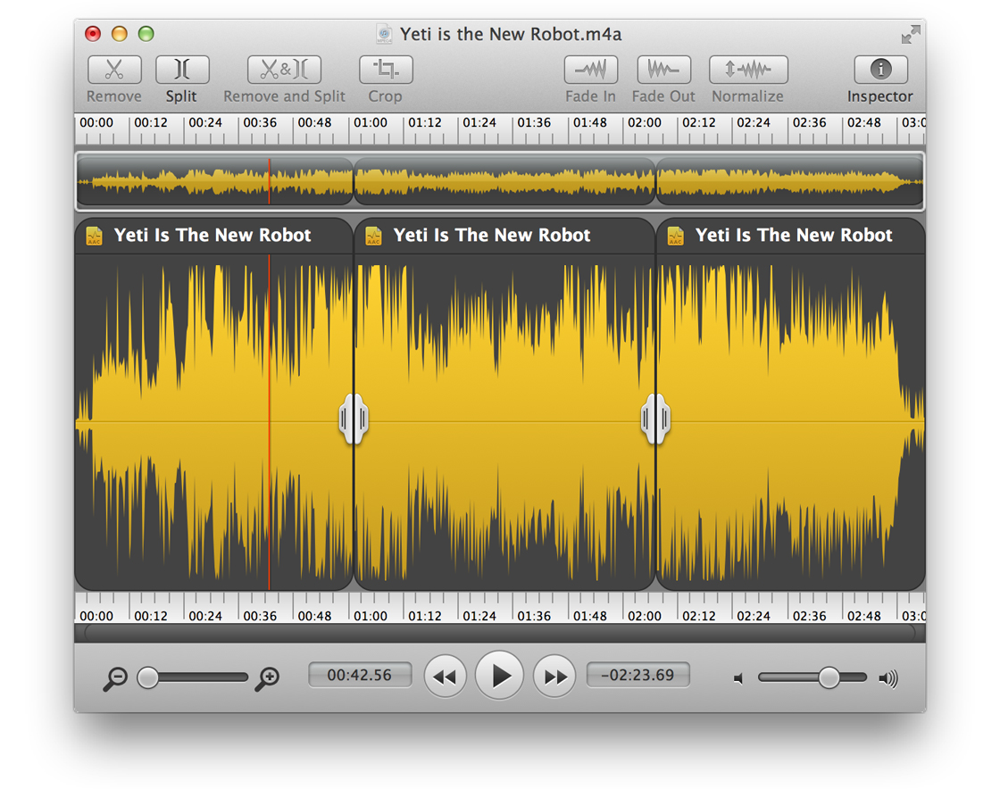
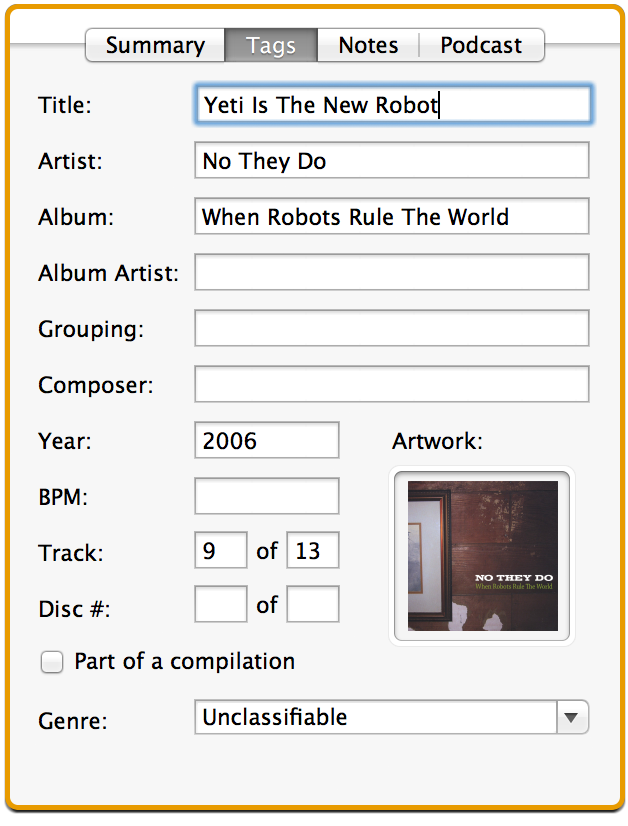
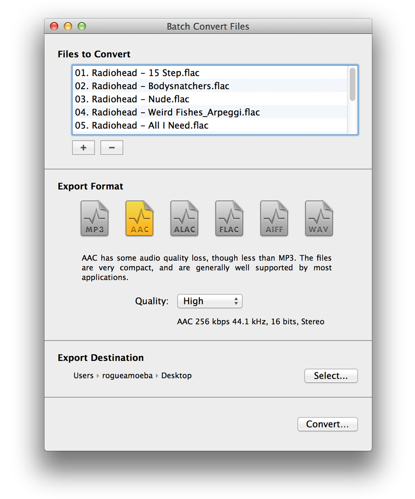

Using Fission
Get started with details on the main Fission controls, as well as its basic functionality.
Fission's Editing Window

Fission's Editing Window
Fission's editing window contains all the controls for editing audio. Here, audio can be selected and removed, split points can be added, and volume levels can be adjusted. For more details, see all the pages in the Editing Operations section.
Fission's Inspector

Fission's Inspector
When an audio file is open, the Inspector can be shown on the right side of the window. Here, metadata can be updated, including ID3 tags, lyrics, and artwork. Information on the file, including bitrate, sample rate, and more, can also be found under the Summary tab.
Fission's Batch Converter

Fission's Batch Converter
Fission's Batch Converter makes it a snap to convert between audio formats. Drop as many audio files as you like onto the Batch Converter, then select the format to which you'd like to convert them. Click Convert, and Fission does the rest. Learn more on the Converting Formats page.